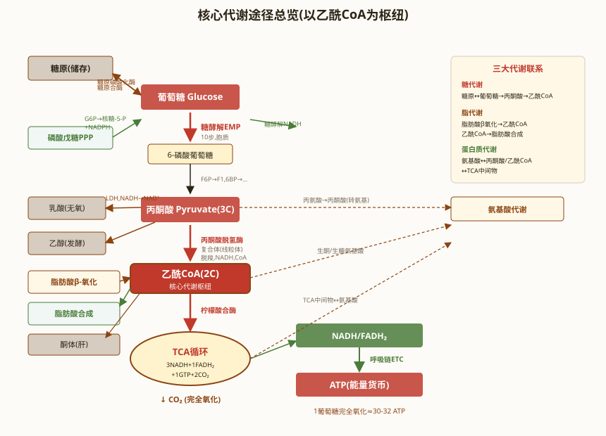

新陈代谢总论 · 生物氧化 · 糖的分解与合成代谢
本节是 ch1-1-5 糖代谢与能量 的深度补充，参考张丽萍《生物化学简明教程》第六版第8章 新陈代谢总论与生物氧化（P162-182）+ 第9章 糖代谢（P183-213），针对仅有高中人教版生物学基础的竞赛生重写，详细解释每步反应、催化酶、能量变化、调控机制。重点内容：
- 新陈代谢研究方法与能量代谢基本规律（自由能、高能化合物）
- 生物氧化与呼吸链（4 大复合体）
- 氧化磷酸化（化学渗透假说、P/O 比、解偶联）
- 胞质 NADH 的穿梭（甘油-3-磷酸穿梭、苹果酸-天冬氨酸穿梭）
- 糖酵解 EMP 途径（10 步反应、关键酶、能量计算）
- 糖的有氧分解（丙酮酸脱氢酶复合体 + 柠檬酸循环 TCA 8 步）
- 磷酸戊糖途径 PPP（氧化阶段 + 非氧化阶段）
- 糖原合成、糖异生、乳酸循环（Cori 循环）
一、新陈代谢总论与能量代谢
1.1 新陈代谢研究方法
新陈代谢（metabolism）是活细胞中所有化学反应的总称，包括：
- 分解代谢（catabolism）：复杂分子 → 简单分子，释放能量，常伴随氧化
- 合成代谢（anabolism）：简单分子 → 复杂分子，消耗能量，常伴随还原
新陈代谢的研究方法：
- 同位素示踪法：用放射性同位素（¹⁴C、³H、³²P、³⁵S、¹⁵N）标记底物，追踪代谢路径。最经典例子：Ruben 用 ¹⁸O 追踪光合作用产氧来自水；Krebs 用 ¹⁴C 标记乙酸证明柠檬酸循环
- 酶抑制剂法：用特异性抑制剂阻断某步反应，累积中间产物，推测代谢路径
- 基因敲除法：定向敲除特定基因，观察代谢表型变化
- 代谢组学：用质谱、NMR 同时检测细胞内所有小分子代谢物（>1000 种）
1.2 能量代谢基本规律
热力学基本概念：
- 自由能 G：体系能做有用功的能量。生物反应中用标准自由能变化 ΔG⁰'（pH 7.0，25℃，1 mol/L 浓度）
- ΔG < 0 反应自发进行（放能反应）；ΔG > 0 反应不能自发进行（吸能反应）。这是判断反应方向的唯一判据
- 酶只改变反应速率，不改变ΔG 或平衡常数 K
高能化合物（high-energy compound）：水解释放大量自由能（ΔG⁰' < -25 kJ/mol）的化合物。最重要的是 ATP。
| 高能化合物 | 高能键类型 | ΔG⁰' (kJ/mol) | 生理意义 |
|---|---|---|---|
| ATP | 磷酸酐键（焦磷酸键） | -30.5 | 通用能量货币 |
| UTP | 磷酸酐键 | -30.5 | 糖原合成、UDP-糖供体 |
| GTP | 磷酸酐键 | -30.5 | 蛋白质合成、信号转导（cAMP） |
| CTP | 磷酸酐键 | -30.5 | 磷脂合成（CDP-胆碱） |
| 乙酰-CoA | 硫酯键 | -31.4 | 碳骨架载体，进入 TCA |
| 磷酸烯醇式丙酮酸（PEP） | 磷酸酯键（烯醇式） | -61.9 | 糖酵解中间物，能量最高 |
| 1,3-二磷酸甘油酸 | 酰基磷酸混合酐 | -49.4 | 糖酵解底物水平磷酸化 |
| 磷酸肌酸 | 磷酸胍基 | -43.1 | 肌肉/脑的能量储存 |
⚠️ ATP 的"轮转"作用：ATP 在分解代谢中产生，在合成代谢中消耗，是细胞的"能量货币"。ATP ↔ ADP + Pi 的循环速度极快，一个静卧的人 24 小时消耗约 40 kg ATP（但体内 ATP 总量仅约 250 g，每分钟要循环数千次）
1.3 CoA 的递能作用
辅酶 A（CoA）由泛酸（VB₅）+ 巯基乙胺 + 3'-磷酸-ADP 组成。其核心是末端巯基（-SH），与羧酸形成硫酯键（高能键，ΔG⁰' ≈ -31 kJ/mol），从而活化酰基。例如乙酰-CoA 是糖代谢进入 TCA 循环的"接口分子"。

二、生物氧化（biological oxidation）
2.1 生物氧化的特点
生物氧化是有机分子在细胞内经过一系列酶催化逐步脱氢、失去电子，最终与 O₂ 结合生成 H₂O，同时逐步释放能量的过程。三大特点：
- 温和条件：常温、常压、近中性 pH，由酶催化
- 逐步释放：能量分步释放，避免一次释放造成能量浪费和高温损伤
- 有水参与：H⁺ 最终与 O₂ 结合生成 H₂O（不同于体外燃烧直接产生 H₂O₂）
2.2 呼吸链的组成（4 大复合体 + 2 个移动载体）
呼吸链（respiratory chain）又称电子传递链（ETC），是位于线粒体内膜的一系列递氢/递电子蛋白复合体。共 4 大复合体 + 2 个可移动电子载体：
| 复合体 | 名称 | 催化反应 | 辅基 | 质子泵 |
|---|---|---|---|---|
| Ⅰ | NADH-泛醌还原酶 | NADH + H⁺ + Q → NAD⁺ + QH₂ | FMN, Fe-S | 是 |
| Ⅱ | 琥珀酸-泛醌还原酶 | 琥珀酸 + Q → 延胡索酸 + QH₂ | FAD, Fe-S | 否 |
| Ⅲ | Q-细胞色素 c 还原酶 | QH₂ + 2 cyt c(ox) → Q + 2 cyt c(red) + 2H⁺ | 血红素 b₅₆₂/b₅₆₆, cyt c₁, Fe-S | 是 |
| Ⅳ | 细胞色素 c 氧化酶 | 4 cyt c(red) + O₂ + 4H⁺ → 4 cyt c(ox) + 2H₂O | 血红素 a, a₃, CuA, CuB | 是 |
两个移动电子载体：
- 泛醌（CoQ / Q）：脂溶性，嵌在内膜中，从复合体Ⅰ/Ⅱ接受电子，传递到复合体Ⅲ
- 细胞色素 c（cyt c）：水溶性小蛋白，位于内膜外侧，从复合体Ⅲ接受电子，传递到复合体Ⅳ
2.3 氧化磷酸化（oxidative phosphorylation）
氧化磷酸化是电子传递过程中释放的自由能驱动 ADP + Pi 合成 ATP的过程。是真核细胞 ATP 的主要来源（约占 80%）。
化学渗透假说（Peter Mitchell, 1961 年提出，1978 年获诺贝尔化学奖）：
- 电子传递时，复合体Ⅰ、Ⅲ、Ⅳ 将质子从线粒体基质泵到内膜外侧（膜间隙）
- 形成跨内膜的质子电化学梯度（质子动力势 Δp）：外酸内碱，外正内负
- 质子沿梯度通过 ATP 合酶（ATP synthase, F₀F₁） 顺流回基质，驱动 ATP 合成
ATP 合酶（ATP synthase）结构：
- F₀（内膜中，质子通道）：ab₂c₁₀~₁₄ 亚基，c 亚基环每转一圈泵 8~10 个质子
- F₁（基质侧，催化 ATP 合成）：α₃β₃γδε，3 个 β 亚基构象循环（结合→合成→释放 ATP）
⚠️ Boyer 结合变构机制（1997 年诺贝尔化学奖）：β 亚基有 3 种构象——开放（O，释放 ATP）、松弛（L，结合 ADP+Pi）、紧密（T，合成 ATP）。γ 亚基旋转一周（120°），3 个 β 亚基依次经历 3 种构象，合成 3 个 ATP。
P/O 比（P/O ratio）：每消耗 1/2 氧原子（接受 1 对电子）所合成的 ATP 数：
- NADH：约 2.5 ATP（10 H⁺ 跨膜，3 H⁺/ATP）
- FADH₂：约 1.5 ATP（6 H⁺ 跨膜）
解偶联剂（uncoupler）：消除 H⁺ 梯度，电子传递正常进行但 ATP 合成停止，能量以热的形式释放。
- DNP（2,4-二硝基苯酚）：化学解偶联剂，将 H⁺ 从膜间隙带回基质
- UCP（解偶联蛋白）：棕色脂肪组织中天然存在的解偶联蛋白，使新生儿产热御寒
2.4 胞质 NADH 的跨膜转运
糖酵解产生的 NADH 在胞质中，线粒体内膜不允许 NADH 自由通过，需要"穿梭"。
| 穿梭方式 | 机制 | 最终电子进入 | ATP 数 | 主要分布 |
|---|---|---|---|---|
| 甘油-3-磷酸穿梭 | 胞质 DHAP ↔ G3P（消耗 NADH → NAD⁺） G3P 进入线粒体 → DHAP（给 FAD → FADH₂） | 复合体Ⅱ（UQ） | 1.5 | 骨骼肌、脑 |
| 苹果酸-天冬氨酸穿梭 | 胞质 OAA + NADH → 苹果酸（消耗 NADH） 苹果酸进入线粒体 → OAA + NADH（给 NAD⁺ → NADH） | 复合体Ⅰ | 2.5 | 心肌、肝、肾 |
2.5 电子传递链与氧化磷酸化的抑制剂
呼吸链抑制剂、ATP 合酶抑制剂、解偶联剂和离子载体是竞赛高频考点，按作用位点分类如下：
| 类别 | 抑制剂 | 作用位点 | 作用机制 |
|---|---|---|---|
| 复合体Ⅰ抑制剂 | 鱼藤酮（Rotenone） | 复合体Ⅰ（NADH-泛醌还原酶） | 阻断电子从 FMN → Fe-S → Q 的传递 |
| 安密妥（Amytal）、粉蝶霉素A | 复合体Ⅰ | 同上，巴比妥类衍生物 | |
| 复合体Ⅱ抑制剂 | 丙二酸 | 复合体Ⅱ（琥珀酸脱氢酶） | 琥珀酸类似物，竞争性抑制 |
| 复合体Ⅲ抑制剂 | 抗霉素A（Antimycin A） | 复合体Ⅲ（Q-cyt c 还原酶） | 阻断 cyt b → cyt c₁ 的电子传递 |
| 复合体Ⅳ抑制剂 | CN⁻（氰化物） | 复合体Ⅳ（细胞色素c氧化酶） | 与 cyt a₃ 的 Fe³⁺ 结合，阻断电子传递给 O₂ |
| CO（一氧化碳） | 复合体Ⅳ | 与 cyt a₃ 的 Fe²⁺ 结合 | |
| N₃⁻（叠氮化物） | 复合体Ⅳ | 抑制 cyt a₃ | |
| ATP合酶抑制剂 | 寡霉素（Oligomycin） | ATP合酶 F₀ 组分 | 阻断质子通道，ATP 合成停止；因质子梯度无法消散，反向也抑制电子传递 |
| 解偶联剂 | 2,4-二硝基苯酚（DNP） | 线粒体内膜 | 质子载体，将 H⁺ 从膜间隙带回基质，破坏质子梯度；电子传递正常但 ATP 合成停止，能量以热释放 |
| 离子载体 | 缬氨霉素（Valinomycin） | 线粒体内膜 | K⁺ 离子载体，破坏膜电位（Δψ），间接破坏质子动力势 |
⚠️ 三类抑制剂的区别关键：
- 电子传递抑制剂（鱼藤酮、丙二酸、抗霉素A、CN⁻/CO/N₃⁻）：直接阻断某段电子传递 → 电子传递停止，质子梯度消散，ATP 合成也随之停止
- ATP 合酶抑制剂（寡霉素）：阻断质子回流 → ATP 合成停止，质子梯度增大，反馈抑制电子传递
- 解偶联剂（DNP）：电子传递正常进行甚至加速（因消除了质子梯度的反馈抑制），但 ATP 合成停止，能量以热释放
- 离子载体（缬氨霉素）：破坏膜电位成分，效果类似解偶联

苍术苷（Atractyloside）是从苍术中提取的有毒糖苷，专一抑制 ADP/ATP 转运载体（ANT，腺苷酸转位酶）。
ANT 位于线粒体内膜，负责将线粒体基质中合成的 ATP 运出、将胞质中的 ADP 运入（ATP/ADP 交换）。苍术苷抑制 ANT 后的连锁反应：
- 线粒体内 ATP 无法运出 → 胞质 ATP ↓
- ATP 蓄积在线粒体基质 → 反向抑制 ATP 合酶
- 质子梯度无法通过 ATP 合酶消散 → 跨膜质子梯度增大
- 质子梯度增大反馈抑制电子传递链 → 电子传递受阻
- O₂ 不能被还原为 H₂O → 呼吸停止
⚠️ 竞赛真题：2018 全国联赛考过苍术苷的作用机制。苍术苷是研究氧化磷酸化与 ATP 转运的经典工具药。
三、糖的分解代谢
3.1 糖酵解（Glycolysis, EMP 途径）
糖酵解是葡萄糖在胞质中分解为丙酮酸的过程（10 步反应）。由 Embden-Meyerhof-Parnas 三人阐明，故又称 EMP 途径。其总反应：
糖酵解 10 步反应（分两个阶段：① 准备阶段消耗 2 ATP；② 储能阶段产生 4 ATP，净产 2 ATP）：
| 步骤 | 底物 | 产物 | 关键酶 | 能量变化 | 备注 |
|---|---|---|---|---|---|
| 1 | 葡萄糖 | 葡萄糖-6-磷酸 (G6P) | 己糖激酶（HK） | -1 ATP | 不可逆；HK 对所有己糖都有活性；肝中葡糖激酶（GK）只对葡萄糖，且不受 G6P 反馈抑制 |
| 2 | G6P | 果糖-6-磷酸 (F6P) | 磷酸葡萄糖异构酶 | 0 | 醛糖-酮糖互变 |
| 3 | F6P | 果糖-1,6-二磷酸 (FBP) | 磷酸果糖激酶-1（PFK-1） | -1 ATP | 糖酵解限速酶；受 ATP/柠檬酸抑制，受 AMP/果糖-2,6-二磷酸激活 |
| 4 | FBP | 甘油醛-3-磷酸 (G3P) + 磷酸二羟丙酮 (DHAP) | 醛缩酶 | 0 | DHAP 与 G3P 通过磷酸丙糖异构酶互变 |
| 5 | DHAP | G3P | 磷酸丙糖异构酶 | 0 | 继续糖酵解 |
| 6 | G3P | 1,3-二磷酸甘油酸 (1,3-BPG) | 甘油醛-3-磷酸脱氢酶 (GAPDH) | 0 (NAD⁺ → NADH) | 1 分子葡萄糖产 2 G3P，故此步产生 2 NADH |
| 7 | 1,3-BPG | 3-磷酸甘油酸 (3PG) | 磷酸甘油酸激酶 (PGK) | +1 ATP（底物水平磷酸化） | 2 G3P → 2 ATP |
| 8 | 3PG | 2-磷酸甘油酸 (2PG) | 磷酸甘油酸变位酶 | 0 | 磷酸基从 C3 移到 C2 |
| 9 | 2PG | 磷酸烯醇式丙酮酸 (PEP) | 烯醇化酶 | 0 (脱水) | 形成高能磷酸键 |
| 10 | PEP | 丙酮酸 | 丙酮酸激酶（PK） | +1 ATP（底物水平磷酸化） | 不可逆；2 PEP → 2 ATP |
⚠️ 三个关键酶（不可逆）：
- 己糖激酶（HK） / 葡糖激酶（GK）—— 第 1 步
- 磷酸果糖激酶-1（PFK-1） —— 第 3 步，限速酶，受多因素调控
- 丙酮酸激酶（PK） —— 第 10 步
能量总结（每分子葡萄糖）：净产 2 ATP + 2 NADH。NADH 进入呼吸链可再产 2.5~3 ATP（取决于穿梭方式）。
丙酮酸的去路：
- 有氧：进入线粒体 → 丙酮酸脱氢酶复合体 → 乙酰-CoA → TCA 循环
- 缺氧：胞质中乳酸脱氢酶（LDH）催化丙酮酸 + NADH → 乳酸 + NAD⁺（再生 NAD⁺ 让糖酵解继续）
- 酵母/某些植物：丙酮酸脱羧酶催化丙酮酸 → 乙醛 → 乙醇脱氢酶催化 → 乙醇（酒精发酵）
糖酵解中 Pi（无机磷酸）参与的步骤：
- 3-磷酸甘油醛脱氢酶（GAPDH）：GAP + NAD⁺ + Pi → 1,3-BPG + NADH + H⁺。Pi 是 GAPDH 的直接底物之一，参与将醛基氧化为酰基磷酸（高能磷酸键）
- 磷酸甘油酸激酶（PGK）：1,3-BPG + ADP → 3-PG + ATP（磷酸基已存在于 1,3-BPG 中，此处不另需游离 Pi）
⚠️ 竞赛真题：2025 全国联赛考过"Pi 是糖酵解中哪个酶的直接底物"——答案为3-磷酸甘油醛脱氢酶（GAPDH）。此步反应中游离 Pi 直接参与形成 1,3-BPG 的高能磷酸键，是糖酵解中唯一需要游离 Pi 作为直接底物的步骤。

3.2 丙酮酸脱氢酶复合体（PDH complex）
丙酮酸进入线粒体后，由丙酮酸脱氢酶复合体（PDH）催化氧化脱羧生成乙酰-CoA，连接糖酵解与 TCA 循环：
PDH 是真核细胞最大的多酶复合体，由 3 种酶共 60 个亚基组成（直径约 50 nm，α₂β₂γ₂ 的 E1 + 24 个 E2 + 6 个 E3 二聚体）：
- E1（丙酮酸脱氢酶）：TPP 辅酶，催化丙酮酸脱羧
- E2（二氢硫辛酰胺乙酰转移酶）：硫辛酸辅基 + CoA，催化氧化 + 转移乙酰基
- E3（二氢硫辛酰胺脱氢酶）：FAD + NAD⁺，将还原型硫辛酸再氧化，传递电子给 NAD⁺
反应中 5 种辅酶协同工作：TPP → 硫辛酸 → CoA → FAD → NAD⁺。硫辛酸的"摆臂"机制使 3 种酶协同工作。
PDH 调控：
- 产物抑制：乙酰-CoA 和 NADH 抑制 PDH
- 共价修饰：PDH 激酶磷酸化 E1α（失活）；PDH 磷酸酶去磷酸化（激活）
- 胰岛素/高 pH/高 Ca²⁺（肌肉收缩）激活 PDH；饥饿/高脂/高 ATP 抑制 PDH
3.3 柠檬酸循环（TCA 循环 / Krebs 循环）
柠檬酸循环（TCA, tricarboxylic acid cycle；三羧酸循环；Krebs 循环）在线粒体基质中进行。每分子乙酰-CoA 完全氧化生成 2 CO₂ + 3 NADH + 1 FADH₂ + 1 GTP（共相当于 10 ATP）。
TCA 循环 8 步反应：
| 步骤 | 底物 | 产物 | 关键酶 | 能量/还原当量 |
|---|---|---|---|---|
| 1 | 乙酰-CoA + 草酰乙酸 (OAA) | 柠檬酸 | 柠檬酸合酶 | 0（缩合） |
| 2 | 柠檬酸 | 异柠檬酸 | 顺乌头酸酶 | 0（脱水-水合） |
| 3 | 异柠檬酸 | α-酮戊二酸 + CO₂ | 异柠檬酸脱氢酶 | 1 NADH |
| 4 | α-酮戊二酸 + HSCoA + NAD⁺ | 琥珀酰-CoA + CO₂ | α-酮戊二酸脱氢酶复合体 | 1 NADH（类似 PDH，需 TPP/硫辛酸/CoA/FAD/NAD⁺） |
| 5 | 琥珀酰-CoA + GDP + Pi | 琥珀酸 + GTP | 琥珀酰-CoA 合成酶（琥珀酸硫激酶） | 1 GTP（底物水平磷酸化） |
| 6 | 琥珀酸 | 延胡索酸 | 琥珀酸脱氢酶 | 1 FADH₂（唯一嵌入线粒体内膜的 TCA 酶=复合体Ⅱ） |
| 7 | 延胡索酸 + H₂O | 苹果酸 | 延胡索酸酶 | 0（水合） |
| 8 | 苹果酸 + NAD⁺ | OAA + NADH | 苹果酸脱氢酶 | 1 NADH |
总反应（每分子乙酰-CoA）：
每分子葡萄糖通过糖酵解 + PDH + TCA 完全氧化：
- 产生 2 ATP（糖酵解底物水平）+ 2 GTP（TCA 底物水平）= 4 ATP
- 产生 10 NADH（2 来自糖酵解、2 来自 PDH、6 来自 TCA）→ 10 × 2.5 = 25 ATP
- 产生 2 FADH₂（TCA）→ 2 × 1.5 = 3 ATP
- 总计约 30~32 ATP（胞质 NADH 穿梭方式不同时 30 或 32）
⚠️ TCA 循环的调控：3 个不可逆关键酶是调控点——柠檬酸合酶、异柠檬酸脱氢酶、α-酮戊二酸脱氢酶。NADH、ATP 抑制；Ca²⁺、ADP 激活（肌肉收缩时促进产能）。

底物水平磷酸化（substrate-level phosphorylation）是指底物在酶催化下直接将磷酸基团转移给 ADP/GDP 生成 ATP/GTP的过程，不经过电子传递链和质子梯度。糖代谢中共有 3 步底物水平磷酸化反应：
| 序号 | 反应 | 催化酶 | 所在途径 | 产物 |
|---|---|---|---|---|
| 1 | 1,3-BPG + ADP → 3-PG + ATP | 磷酸甘油酸激酶（PGK） | 糖酵解（第 7 步） | ATP |
| 2 | PEP + ADP → 丙酮酸 + ATP | 丙酮酸激酶（PK） | 糖酵解（第 10 步） | ATP |
| 3 | 琥珀酰-CoA + GDP → 琥珀酸 + GTP | 琥珀酰-CoA 合成酶（琥珀酸硫激酶） | TCA 循环（第 5 步） | GTP |
⚠️ 竞赛要点：这是糖代谢中不经过电子传递链（氧化磷酸化）直接产生 ATP/GTP 的三步反应。每分子葡萄糖经糖酵解产生 2 ×（第 1、2 步）= 4 ATP（净产 2 ATP），经 TCA 产生 2 ×（第 3 步）= 2 GTP，共 6 个高能磷酸键来自底物水平磷酸化。
3.4 乙醛酸循环（glyoxylate cycle）
乙醛酸循环是 TCA 循环的"变体"，仅存在于植物、细菌、真菌（动物没有），位于乙醛酸循环体（glyoxysome）中。意义：当生物以乙酸/脂肪酸为唯一碳源时，2 分子乙酰-CoA 净生成 1 分子琥珀酸，可补充 TCA 中间物、净合成糖（糖异生）。
关键酶：异柠檬酸裂解酶 + 苹果酸合酶（绕过了 TCA 中两个脱羧步骤）。净反应：2 乙酰-CoA → 1 琥珀酸（草酰乙酸在循环中再生）。意义：以乙酸/脂肪酸为碳源时，可净合成四碳二羧酸（琥珀酸），补充 TCA 中间物并通过糖异生合成葡萄糖。
3.5 磷酸戊糖途径（PPP, HMP）
磷酸戊糖途径（pentose phosphate pathway, PPP）是葡萄糖氧化的另一条途径，在胞质中进行，分两阶段：
- 氧化阶段（产生 NADPH + 核糖-5-磷酸）：
- 葡萄糖-6-磷酸 → 6-磷酸葡糖酸内酯（6-磷酸葡糖脱氢酶 G6PD，关键酶）→ 6-磷酸葡糖酸 → 核酮糖-5-磷酸（6-磷酸葡糖酸脱氢酶）→ 核糖-5-磷酸 + CO₂
- 总反应：3 G6P + 6 NADP⁺ → 3 核糖-5-P + 6 NADPH + 3 CO₂
- 非氧化阶段（核糖-5-P 互变与糖回补）：
- 转酮醇酶（TK）：转移 2C 单位（酮糖→醛糖），辅酶为 TPP（焦磷酸硫胺素，VB₁）
- 转醛醇酶（TA）：转移 3C 单位，不需辅酶
- 5C、6C、4C、3C、7C 糖之间互变，最终回补 6-磷酸果糖和 3-磷酸甘油醛，可进入糖酵解或糖异生
PPP 的生理意义：
- 产生 NADPH（区别于 NADH）：用于还原性生物合成（脂肪酸、胆固醇合成）、维持谷胱甘肽（GSH）还原态以对抗氧化应激、细胞色素 P450 还原
- 产生 核糖-5-磷酸：嘌呤/嘧啶合成的原料（核苷酸合成）
- 连接糖酵解和糖异生：非氧化阶段产生的 F6P 和 G3P 可回补糖酵解；反之当细胞需要 NADPH 而不需核糖时，核糖-5-P 也可逆向转化为糖酵解中间物，实现三条途径的灵活衔接
⚠️ G6PD 缺乏症（蚕豆病，favism）：X 染色体连锁隐性遗传，是人类最常见的酶缺陷病。发病机制链：
- G6PD 缺乏 → PPP 氧化阶段受阻 → NADPH 产生不足
- NADPH 不足 → 谷胱甘肽还原酶无法将 GSSG 还原为 GSH → GSH 维持困难
- GSH 不足 → 红细胞无法清除活性氧 → 红细胞膜易受氧化损伤
- 膜损伤 + 血红蛋白变性形成 Heinz 小体 → 血管内/外溶血
诱发因素：食用蚕豆（含蚕豆嘧啶核苷）、磺胺类药物、伯氨喹（抗疟药）、萘（樟脑丸）等氧化性物质。红细胞因缺乏线粒体，PPP 是其唯一 NADPH 来源，故对 G6PD 缺乏最为敏感。
⚠️ 竞赛真题：蚕豆病患者红细胞内 PPP 途径受阻，NADPH 生成减少，GSH 无法维持还原态，导致红细胞膜氧化损伤而溶血。这是联赛高频考点。
3.6 乙酰-CoA 的去向总结
三大物质代谢的"十字路口"是 乙酰-CoA：
- 糖 → 丙酮酸 → 乙酰-CoA
- 脂肪 → 脂肪酸 β-氧化 → 乙酰-CoA；甘油 → DHAP → 糖酵解
- 蛋白质 → 氨基酸 → 乙酰-CoA 或 TCA 中间物
乙酰-CoA 的去向：
- 进入 TCA 完全氧化产 ATP
- 合成 脂肪酸（胞质，先经柠檬酸穿梭 + ATP-柠檬酸裂解酶生成乙酰-CoA）
- 合成 胆固醇（甾醇）
- 合成 酮体（饥饿、糖尿病时肝中产生）
- 合成 乙酰胆碱（神经递质）
- 肝中 N-乙酰化反应（生物转化）
四、糖的合成代谢
4.1 糖原合成（glycogenesis）
肝糖原/肌糖原的合成步骤：
- 葡萄糖 → G6P（己糖激酶/葡糖激酶）
- G6P → G1P（磷酸葡萄糖变位酶）
- G1P + UTP → UDPG（UDP-葡萄糖，活化形式） + PPi（UDP-葡萄糖焦磷酸化酶）
- UDPG 中的葡萄糖基通过 α-1,4-糖苷键连接到糖原引物的非还原端（糖原合酶，限速酶）
- 分支酶（4:6 转移酶，amylo-1,4→1,6-transglucosidase）每隔 8~12 个葡萄糖基引入一个 α-1,6-糖苷键分支
糖原合酶有两种形式：a 型（去磷酸化，活性）、b 型（磷酸化，无活性）。其活性受 cAMP-PKA 级联调控：肾上腺素/胰高血糖素 → cAMP ↑ → PKA → 糖原合酶 a 磷酸化为 b（失活），同时磷酸化酶 b 磷酸化为 a（激活）→ 糖原分解。
4.2 糖原分解（glycogenolysis）
糖原分解步骤：
- 糖原 → G1P（糖原磷酸化酶，限速酶，催化 α-1,4-糖苷键磷酸解）
- α-1,6-糖苷键由脱支酶（同时具有 4-α-D-葡糖苷转移酶活性）水解，释放葡萄糖
- G1P → G6P（磷酸葡萄糖变位酶）
- G6P → 葡萄糖（仅肝/肾，葡萄糖-6-磷酸酶）→ 释放入血
⚠️ 肌肉没有 G6P 酶，肌糖原分解的 G6P 直接进入糖酵解供能；只有肝糖原能补充血糖。
4.3 糖异生（gluconeogenesis）
糖异生：从非糖前体（乳酸、甘油、生糖氨基酸）合成葡萄糖。主要在肝细胞（90%），少量在肾（10%）。
糖酵解的 3 个不可逆反应在糖异生中由 4 个关键酶绕过：
| 糖酵解反应 | 糖异生对应 | 关键酶 | 能量 |
|---|---|---|---|
| 丙酮酸 → PEP（PK 催化） | 丙酮酸 → OAA → PEP | 丙酮酸羧化酶（PC，生物素辅基，消耗 1 ATP） PEPCK（PEP 羧激酶，消耗 1 GTP） | 2~3 个高能键 |
| FBP → F6P（PFK-1） | FBP → F6P | 果糖-1,6-二磷酸酶（FBPase-1） | 0 |
| G6P → 葡萄糖（GK） | G6P → 葡萄糖 | 葡萄糖-6-磷酸酶（仅肝/肾） | 0 |
总反应（从 2 丙酮酸 → 1 葡萄糖）：消耗 6 ATP + 2 GTP（相当于 4~6 个高能磷酸键），所以糖异生是耗能过程。
乳酸循环（Cori 循环）：
- 肌肉缺氧时，葡萄糖经糖酵解产生乳酸 + ATP
- 乳酸经血液运到肝
- 肝中乳酸脱氢酶催化乳酸 → 丙酮酸（消耗 NAD⁺）
- 丙酮酸经糖异生 → 葡萄糖
- 葡萄糖回到肌肉
意义：① 回收乳酸中的能量（避免酸中毒）；② 防止肌肉乳酸堆积；③ 间接为肌肉供能。
⚠️ 糖异生的调控：
- 高血糖/胰岛素 → 抑制糖异生（PKA 受抑）
- 低血糖/胰高血糖素/糖皮质激素 → 激活糖异生（PKA 激活 PEPCK、FBPase-1；磷酸化 PFK-2 / FBPase-2）
4.4 蔗糖、淀粉的合成
植物中糖的合成：
- 蔗糖：UDP-葡萄糖 + 果糖 → 蔗糖 + UDP（蔗糖合酶）；或 F6P + UDP-葡萄糖 → 蔗糖-6-P（磷酸蔗糖合酶）→ 蔗糖
- 淀粉：ADPG（ADP-葡萄糖，由 ADPG 焦磷酸化酶合成）+ 葡聚糖引物 → 淀粉合酶催化 α-1,4 糖苷键延伸
- ADPG 焦磷酸化酶是淀粉合成的限速酶，受 3-磷酸甘油酸激活、Pi 抑制
4.5 葡糖醛酸代谢途径
UDP-葡糖醛酸（UDPGA）是葡萄糖的活化形式，参与：
- 肝生物转化第二相反应（结合反应）—— 将亲脂性毒物/药物与葡糖醛酸结合 → 排泄
- 透明质酸、硫酸软骨素、肝素等糖胺聚糖的合成
- 胆红素代谢（结合胆红素）
📌 ch1-1-8 拓展要点 · 本节小结
- 新陈代谢研究方法：同位素示踪（¹⁴C、³H、³²P）、酶抑制剂、基因敲除、代谢组学。
- 高能化合物：ATP（-30.5 kJ/mol）是通用能量货币，UTP 用于糖合成、GTP 用于蛋白合成、CTP 用于脂合成、乙酰-CoA 硫酯键（-31.4 kJ/mol）是碳骨架载体。
- 呼吸链 4 大复合体：Ⅰ（NADH→Q，泵 H⁺）、Ⅱ（琥珀酸→Q，不泵 H⁺）、Ⅲ（Q→cyt c，泵 H⁺）、Ⅳ（cyt c→O₂，泵 H⁺）。NADH P/O = 2.5，FADH₂ P/O = 1.5。
- 化学渗透假说（Mitchell 1961/1978 诺奖）：电子传递驱动 H⁺ 跨膜 → 质子动力势 → H⁺ 通过 ATP 合酶 F₀F₁ 顺流回基质驱动 ATP 合成。Boyer 结合变构机制（1997 诺奖）。
- 呼吸链与氧化磷酸化抑制剂：① 复合体Ⅰ→鱼藤酮/安密妥；② 复合体Ⅱ→丙二酸（琥珀酸类似物）；③ 复合体Ⅲ→抗霉素A；④ 复合体Ⅳ→CN⁻/CO/N₃⁻（作用于 cyt a₃）；⑤ ATP合酶→寡霉素（F₀）；⑥ 解偶联剂→DNP（质子载体，电子传递正常但ATP合成停止）；⑦ 离子载体→缬氨霉素（K⁺）。UCP 为棕色脂肪天然解偶联蛋白。
- 苍术苷（Atractyloside）：专一抑制 ADP/ATP 转运载体（ANT）→ 线粒体ATP无法运出 → ATP蓄积抑制ATP合酶 → 质子梯度增大 → 电子传递受阻 → O₂不能被还原 → 呼吸停止。2018全国联赛真题。
- 胞质 NADH 穿梭：甘油-3-磷酸穿梭（骨骼肌，1.5 ATP）+ 苹果酸-天冬氨酸穿梭（心肌/肝，2.5 ATP）。
- 糖酵解 10 步反应：净产 2 ATP + 2 NADH。3 个关键酶：HK（GK）/ PFK-1（限速酶）/ PK。PFK-1 受 ATP/柠檬酸抑制、AMP/果糖-2,6-BP 激活。GAPDH 是糖酵解中唯一以游离 Pi 为直接底物的酶（2025 联赛真题）。
- 底物水平磷酸化 3 步：① 1,3-BPG→3-PG（PGK，糖酵解）；② PEP→丙酮酸（PK，糖酵解）；③ 琥珀酰-CoA→琥珀酸（琥珀酰CoA合成酶，TCA）。不经过电子传递链直接产 ATP/GTP。
- PDH 复合体：3 种酶 60 亚基（最大多酶复合体），5 种辅酶（TPP/硫辛酸/CoA/FAD/NAD⁺）协同工作。PDH 激酶磷酸化失活 E1α，PDH 磷酸酶去磷酸化激活。
- TCA 循环 8 步：每乙酰-CoA 产 2 CO₂ + 3 NADH + 1 FADH₂ + 1 GTP（= 10 ATP）。3 个不可逆关键酶：柠檬酸合酶 / 异柠檬酸脱氢酶 / α-KG 脱氢酶。琥珀酸脱氢酶（复合体Ⅱ）是唯一嵌入内膜的酶。
- 每分子葡萄糖完全氧化总产 30~32 ATP：2（糖酵解 ATP）+ 2（TCA GTP）+ 25（10 NADH × 2.5）+ 3（2 FADH₂ × 1.5）= 32（苹果酸-天冬氨酸穿梭）或 30（甘油-3-磷酸穿梭）。
- 磷酸戊糖途径（PPP）：G6PD 催化 G6P 脱氢（限速酶）→ 产 NADPH + 核糖-5-P。转酮醇酶辅酶为 TPP。NADPH 用于还原性生物合成和维持 GSH 还原态（抗氧化）。PPP 连接糖酵解和糖异生。G6PD 缺乏症（蚕豆病）：NADPH 不足 → GSH 维持困难 → 红细胞膜氧化损伤 → 溶血（联赛高频考点）。
- 糖原代谢：糖原合酶（合成，a 活/b 无活）+ 糖原磷酸化酶（分解，a 活/b 无活）。PKA 通过磷酸化双向调节：合酶失活 + 磷酸化酶激活。
- 糖异生 4 个关键酶：丙酮酸羧化酶（PC）/ PEPCK / 果糖-1,6-二磷酸酶 / 葡萄糖-6-磷酸酶。耗能 6 ATP + 2 GTP。仅肝/肾有 G6P 酶。
- Cori 循环：肌乳酸 → 肝糖异生 → 葡萄糖回肌肉。不能净产 ATP，但清除乳酸 + 间接供能。
- 乙酰-CoA 是三大物质代谢的"十字路口"：糖→乙酰-CoA（PDH）、脂→乙酰-CoA（β-氧化）、氨基酸→乙酰-CoA。乙酰-CoA 去向：TCA / 脂肪酸合成 / 胆固醇合成 / 酮体 / 乙酰胆碱 / 肝 N-乙酰化。